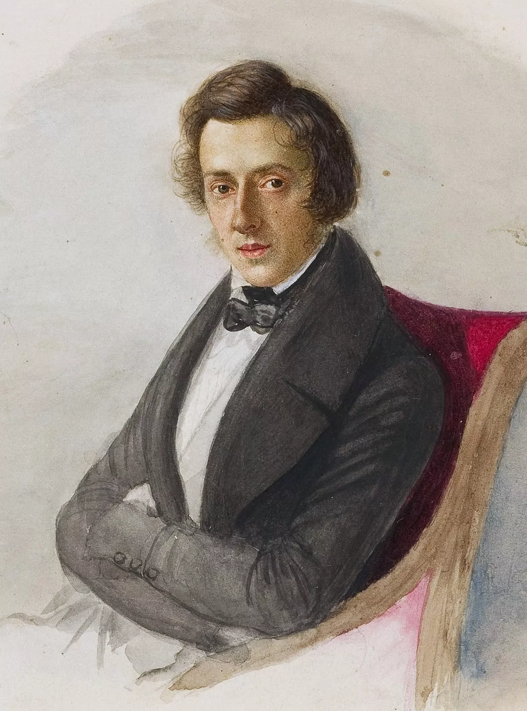

Por: Yago Fogaça de Oliveira

Frédéric François Chopin, também chamado Fryderyk Franciszek Chopin, foi um pianista polaco radicado na França e compositor para piano da era romântica. É amplamente conhecido como um dos maiores compositores para piano e um dos pianistas mais importantes da história.
🎹
Dez obras mais famosas de Chopin
Balada n.º 1 op.
Mazurka op. 33 n.º 4.
Prelúdio op. 28 n.º 15
Nocturno op. 48 n.º 1
Polonaise op.
Sonata n.º 3 op.
Barcarola op.
Valsa op. 64 n.º 2.
Um vídeo a seguir de sua peça mais famosa